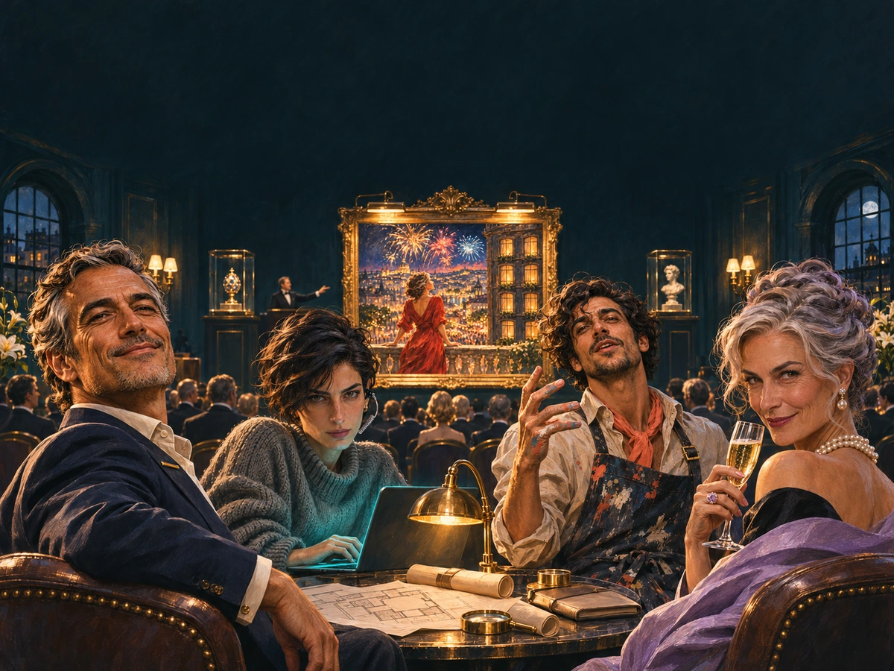

Volgt snel
Een team, een schilderij van achttien miljoen en een uitnodiging die per ongeluk bij jou terechtkwam. Of niet per ongeluk.
Een roof, een team en een schilderij. Jij beweegt, en op je telefoon komt het verhaal binnen: berichten, foto’s, nieuws. Sta je stil, dan wacht het.
Je scherm blijft aan. Met de zakstand kun je je telefoon wegstoppen zonder dat er iets wordt aangetikt.
De overkant. Met elke aflevering wordt het beeld scherper.